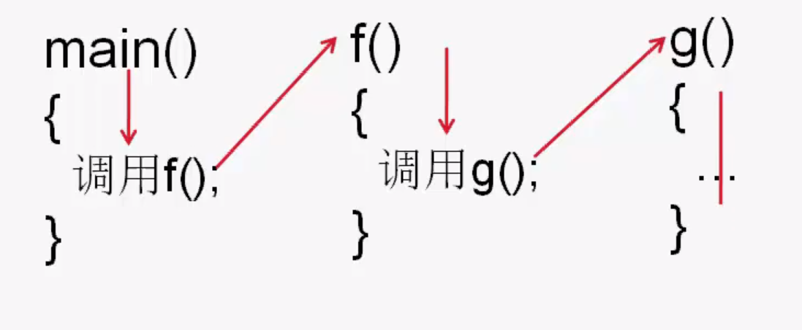

简介：函数的调用。
函数的调用
函数定义后，并不能自动执行，必须通过函数调用来实现函数的功能。
函数调用，即控制执行某个函数。
C++中，主函数可以调用其他子函数，而其他函数之间也可以互相调用。
函数调用的格式
函数调用的一般格式：
<函数名> (<实际参数表>>)//有参调用
或
<函数名> ()//无参调用
其中：
- <函数名>为要使用的函数的名字。
- <实际参数表>是以逗号分隔的实参列表，必须放在一对圆括号中。
- <实参表>与<形参表>中参数的个数、类型和次序应保持一致。
- 当调用无参函数时，函数名后的圆括号不能省略。
实参的几种形式
- 形参为简单类型变量，对应的实参可以是：常量，变量及表达式。
- 形参为数组，对应的实参为数组（名）。
- 形参为结构类型，对应的实参为结构类型变量。
如：调用已知三边求三角形面积的函数Area。1
2
3
4double Area(double, double, double);//函数声明
cout <<Area(4.0,5.0,6.0)<<endl;//常量作为实参
cout <<Area(a,b,c)<<endl;//变量作为实参
cout <<Area(a+1,b+1,c+2)<<endl;//表达式作为实参
函数调用的形式
- 函数调用作为一个独立的语句（用于无返回值的函数）
调用的形式为：
函数名(实参表); 或 函数名();
如：调用print_char函数（用户定义的无返回值函数）1
print_char('*',6); //连续显示6个“\*”字符。
如：调用函数Area，计算一个三角形的面积1
Area(3.0,4.0,5.0); ///该函数调用是无实际意义的，该函数有返回值
- 函数调用出现在表达式中（适用于有返回值的函数）
如：函数max()求两个数的最大值，函数原型如下1
float max(float x,float y);
该函数有返回值，调用时应出现在表达式中。
例1
2
3c=max(a,b);//函数调用出现在赋值运算符右边的表达式中
d=max(c,max(a,b));//函数调用同时出现在实参表达式中
cout<<max(a,b)<<endl;//输出一个函数值
- 函数的嵌套调用
函数的嵌套调用食指在调用一个函数的过程中，被调用的函数又调用了另一个函数。
由main()函数调用函数f()，函数f()中又对g()进行调用，这就是函数的嵌套调用。
